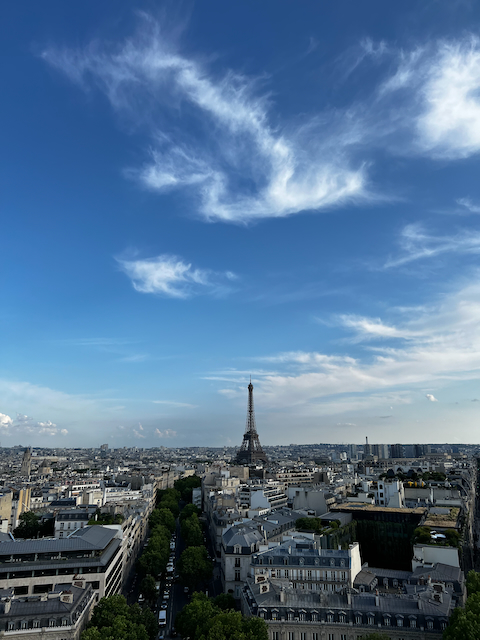
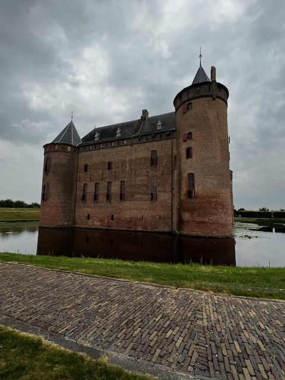

Viagens
Comecei a vida de viajante em 2015, quando tinha 21 anos. Minha primeira viagem foi sozinha num voo de 10 horas, foi muito legal e muito assustador também!
Malta
O arquipélago de Malta está localizado no mar Mediterrâneo,
entre o sul da Europa e o noroeste
da
África.
Divide-se em três ilhas e tem como capital Sliema.
Entre todas as construções, o que me fez apaixonar mesmo foram as praias!
França
Conheci Paris, que dispensa apresentações! Essa vista é de cima do Arco do Triunfo, lindíssima.
Holanda
Da Holanda o que mais gostei foi conhecer os castelos!
Bélgica
Na Bélgica a grande descoberta foram as excelentes cervejas e chocolate. O que impressiona também é a arquitetura do lugar.

Orlando - EUA
Amei todos os lugares que conheci, mas tenho certeza que Orlando é um destino que se repetirá muitas e
muitas
vezes.
Os parques e toda a magia de sentir-se criança de novo ganham meu coração todas as vezes que
visito!